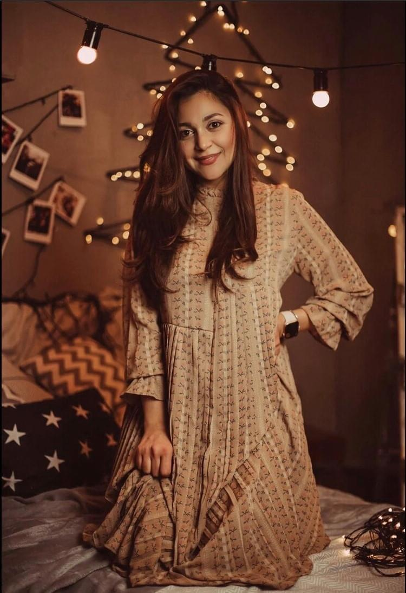

Մեր Մասին
Ես Գոհարիկն եմ, գունեղ ու երջանիկ Շուշիից:
Ու եթե ամեն մարդ պետք է փնտրի ու գտնի իր կերպարը, ես համարում եմ, որ ԵՍ ԳՏԱ ՆՐԱՆ:
Իմ ամբողջ կիրքը, մտքերը, երազանքներն ու պատկերացումները ներդնելով իմ շոկոլադների մեջ` փորձում եմ ստանալ իմ Նախշուններին:
Պատվիրիր, փորձիր, զգա ու համոզվի~ր...^_~